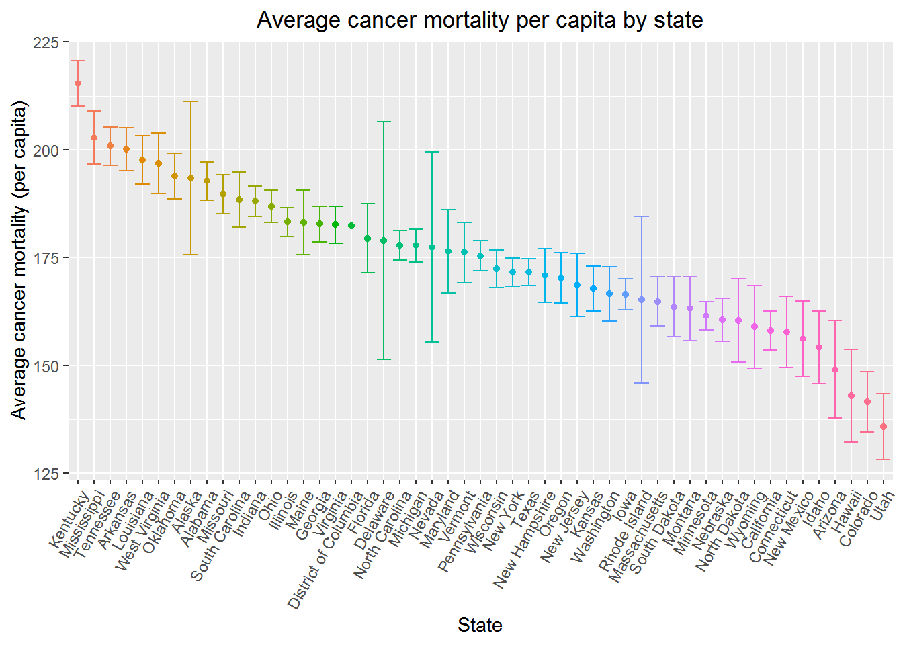

Christian Pascual, Yueming Kou, Chu Yu, Jianyong Liu
This report seeks to create and evaluate a model for predicting cancer mortality rates based on county-level information sourced from census data. A model based on cancer incidence, poverty, education, unemployment and insurance was developed after a literature review. The model was assessed for linear regression assumptions, outliers and on predictive ability. The model is only able to explain 44% of the variance in cancer mortality rates, but had excellent predictive ability. Predictive models like these provide a tool for healthcare administrations to better predict cancer burden on a county-level, enabling more efficient allocation of resources and manpower.
Cancer ranks among the leading causes of death worldwide. 1 1.7 million new cases are estimated to be diagnosed in 2018 in the U. S, and more than 600,000 are expected to die due to the disease. 2 Cancer also represents a large economic burden to the U.S, costing an estimated $80.2 billion according to two reports. 3, 4 However, cancer’s varied pathology and heterogenous geographical distribution makes it difficult to efficiently target locations that may need more resources to reduce their cancer burden. 2 Thus, predictive models may offer a solution to this problem by providing a way to estimate the amount of cancer mortality based on publicly available data. This report seeks to create and validate such a predictive model for cancer mortality given data aggregated from publicly available census estimates from 2010 to 2016.
Data Characterization
Data from the 2010 to 2016 U.S. Census estimates was gathered and aggregated for this report. Each observation represents an individual county and associated demographic and socioeconomic figures, including population size, income, education level, insurance and household information. Cancer mortality is measured as mean per capita cancer mortalities in the dataset. Figure 1 shows the estimated average cancer mortality by state.

Literature Review
Singh et. al found in a 2017 study that low socioeconomic status and membership in an ethnic minority was predictive of decreased cancer patient survival.Singh also established in a 2013 study that high unemployments are associated with higher liver-cancer mortality.A similar study on unemployment was done by Maruthappu et.al. Rohlfing et.al showed that Medicaid/uninsured patients have poorer survival compared to privately insured patients.
Regression Analyses
These candidate variables were fed into a cross-validated LASSO regression to further reduce the number of covariates. The remaining covariates were then used as the final predictive model. Model diagnostics were performed to assess compliance with linear regression assumptions. Potential outliers and influential points were analyzed and assessed for potential removal from the model building.
Final Model
Two candidate models were produced by LASSO, based on different optimal lambdas produced in the cross-validation. One model stemming from the smallest lambda suggested that percentage of black residents and percentage of residents without a high school degree contributed to the model, while the alternative based on a more parsimonious model omitted these factors (1 standard error lambda).
Further regression analyses on the full suite of variables from literature review showed that percentage of black residents in the county was not significantly related to cancer mortality rates (t = 1.392, P < 0.1640). Percentage of those without a high school degree was also not significantly associated (t = 0.634, P = 0.526). Thus, the more parsimonious LASSO model was chosen. Incidence rate of cancer, poverty rate, high school education rate, unemployment rate and percent on only public insurance had significant relationships to cancer mortality rate (P < 0.001 for everything but unemployment which was at P < 0.01). The adjusted R^2 for the training data was 0.435, and the training MSE was 431.
Poverty rate and percentage of residents only under public insurance was noted to be highly correlated (⍴ = 0.80). However, the variance inflation factors associated with these two factors was not indicative of high multicollinearity (2.96 and 3.11, respectively). Given that both variables were highly significant to the model, both covariates were kept.
Model Diagnostics, Outliers and Predictive Ability
Diagnostic plots show that the model mostly adhered to the assumptions of linear regression, deviating at both extremes of cancer mortality rates. Normality of the residuals was maintained until 2 standard deviations away from the mean. 6 observations in particular stood and were assessed for their influence on the model.
5 counties in the dataset had both high leverage and high studentized residuals. None of these counties were found to be exceedingly influential (Cook’s distance > 1). The model was refit excluding the outliers, but this had little effect on coefficient magnitude and significance or the adjusted R^2. The average test MSE calculated from the 10-fold, 10 repeat cross-validation was 434.9.
This report presents a model that predicts cancer mortality per capita on the county level using census information that is easily accessed and available. The incidence rate of cancer, poverty rate, proportion of high school educated residents, unemployment rate and proportion of residents only on public insurance had highly positive significant associations with cancer mortality rate. The significance of these covariates confirms the relationships found in the literature review and lends credence to the utility of a predictive model on cancer mortality based on demographic information.
The final model shows that poverty percentage and percent on only public insurance are the largest contributors to the predicted cancer mortality (coefficients 1.04 and 0.76, respectively). This result lines up with the intuition that cancer patients from lower socioeconomic strata cannot afford the treatment needed to extend their survival, as stated by Singh. 5 Upon investigation, the 5 outlier counties in the dataset are those with disproportionately high cancer mortality despite lower rates of poverty and sole public insurance status.
The model is not without limitations. Model diagnostics showed deviation from normality at both the extreme low and high ends of the data. Exploratory analyses into transformations of the cancer mortality rate also resulted in similarly heavy tails. The model attempts to explain cancer mortality entirely in terms of demographic version, effectively losing any explanatory power lent by biological markers or other clinical data. Despite this, the model still has relatively robust predictive ability, evidenced by only slight changes in the cross-validated test MSE. While this report uses a linear regression for prediction, other types of models may be used to better use. The heterogeneity of cancer pathology and geography lends itself well to Random Forests, which may offer increased robustness to extreme values.
The source for the site on GitHub is here. The R code for this project is here